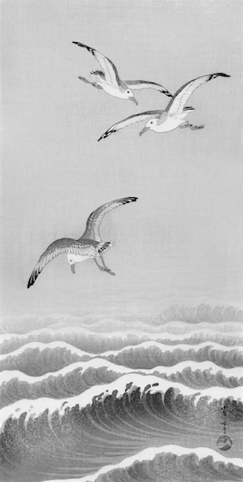

Les nouveaux saints
Pour la majorité de nos contemporain·es, l’écologie est une pesante discipline de tous les jours, un ensemble d’éco-gestes, d’éco-consommation et d’éco-renoncement « à l’avion et à la viande ». En établissant une double contrainte qui formule, d’un côté, une injonction à ne plus polluer, de l’autre, la nécessité de maintenir des structures sociales et politiques qui détruisent la planète, on enferme les individus dans une voie que l’on propose de nommer : écologie du renoncement.
La question du renoncement a toujours été présente dans la morale écologique, du fait d’une forte composante religieuse depuis ses origines au XIXe siècle, jusqu’à la constitution du « mouvement écologiste » après les soulèvements de 1968. S’il y a un siècle encore, les chrétiens de tous poils faisaient le dimanche des concours de sainteté, les écologistes d’aujourd’hui font des concours d'empreinte carbone. En ces temps de sécularisation, on peut toujours acheter des indulgences sous la forme de compensation carbone ; on se repent de ses péchés écologiques auprès de ses proches ou dans la presse ; on raconte sa conversion à la lecture des saintes écritures du GIEC ou d'un père de la sobriété ; et chacun·e est incité·e à faire sa bonne action du jour. Or, seules les personnes ayant un large accès aux biens et services peuvent par la suite se targuer d'y renoncer : on ne peut renoncer qu’à ce qu’on possède déjà.
À la fierté d’apercevoir son reflet auréolé dans le miroir, s’ajoute la satisfaction de faire plus et mieux qu’autrui, qui s’exprime dans la culpabilisation du pécheur. La personne qui aura la gourde la plus durable se verra octroyer le droit d’humilier et de dénoncer celleux qui continuent inconsciemment de boire de l’eau dans des gobelets en plastique. Cette compétition entre les éco-consommateurs est alimentée par les éco-entreprises qui, à coup d’éco-marketing, vendent toujours plus d’éco-produits. Cette rivalité encouragée par les autorités transforme chacun·e en un·e petit·e surveillant·e de sa consommation et de celle des autres. Et pendant que nous ne sommes pas en train de réfléchir à la façon de changer le monde, le capitalisme, lui, prospère sur cette éco-vigilance qui garantit son éco-fonctionnement.
Selon cette morale, les personnes les plus fautives sont celles qui, justifiant leur inaction par un manque de pouvoir d’achat, continuent d’utiliser leur voiture diesel chaque jour pour quitter leur logement périurbain, véritable passoire énergétique, et enfiler leur bleu de travail dans une usine responsable de la déforestation amazonienne. Mais de quelle liberté fantôme, collective ou individuelle, jouissons-nous quand nous sommes contraint·es à enrichir de plus riches que nous ? Et qui sont-ils, eux, qui pensent avoir le choix ?
Renoncement et surveillance
Culpabilisation, compétition et exclusion sont autant de résultats de cette stratégie du renoncement qui rend inconcevable toute révolte populaire contre les structures politiques et économiques. Dans cette atomisation des comportements écologiques, les ingénieur·es et technicien·nes fournissent l’outil de mesure rationnel et indispensable : l’empreinte carbone. Chaque personne peut, dès lors, compter, mesurer, comparer les émissions de gaz à effet de serre dont elle serait responsable pour se rendre compte de son impact, apprendre à le manager et à l'optimiser.
De même que les entreprises ont droit à des quotas carbone, les consom’acteurs, intériorisant la logique d’autocontrôle, adoptent des mécanismes similaires. Avec un peu de chance, en s’inspirant du modèle du crédit social chinois, on en viendra à désigner des champion·nes de l’écologie, qui bénéficieront de crédits bonus pour avoir acheté la dernière voiture électrique (+ 500 points !) ou pour avoir fabriqué des produits ménagers bio (+5 points par mois !).
L’idée d’une « carte carbone » personnelle, défendue surtout par des politiciens écologistes, qui devrait permettre la comptabilisation des émissions individuelles et fixer un plafond d’émission indépassable, nous mène tout droit vers une surveillance généralisée. Chacun·e sera appelé·e à devenir gestionnaire de sa vie polluante, sous le regard paternel et approbateur des États, des ONG et des grandes entreprises.
La voie du renoncement est médiatiquement considérée comme la stratégie écologique la plus respectable, car elle appelle de ses vœux de nouvelles mesures d’austérité et de sécurité. Les groupes de copains, ex-consultants financiers en marketing digital à La Défense, qui se retirent à la campagne pour fuir l’effondrement de la société font la une des journaux mainstream et y sont considérés comme des radicaux. Or, si les médias applaudissent ces évadés urbains, c’est bien parce qu’ils ont décidé de changer de vie sans lutter. En somme, leur renoncement est total.
Une écologie affirmative
Nous ne nions pas que des choix de consommation puissent faire partie d’une démarche écologique, mais remettons-les à leur juste place. Ces « choix » correspondent à des démarches personnelles qui n’ont pas comme objectif de faire monde autrement. Même si ces gestes étaient effectués massivement dans certains pays, ils ne suffiraient pas à inverser à eux seuls les changements climatiques. Par contre, ils peuvent apporter un apaisement individuel non négligeable et constituent bien souvent les premiers pas d'une prise de conscience écologique. Quand on cherche à prendre de l’indépendance vis-à-vis de conditions d'existence aliénantes, on met en adéquation ce que l’on fait et ce que l’on pense. On s’ouvre une voie d’apprentissage, celle qui consiste à vivre hors des structures économiques et sociales qui nous ont été imposées. C’est ensuite lors des luttes collectives que cet apprentissage pourra faire la différence. En ce sens, l'efficacité écologique des actions individuelles ne doit pas (ou pas seulement) être mesurée en fonction de l'empreinte carbone, mais surtout en fonction de leur potentiel à transformer et améliorer nos conditions de vie collective.
Renoncer à quelque chose, c’est au fond formuler un regret. On ne renonce qu’à ce qu’on aime. Aimons-nous réellement poireauter dans les bouchons, confier notre argent à des banques sans foi ni loi, manger quotidiennement la même malbouffe, passer des heures tout·es seul·es devant des écrans ? Ou est-ce simplement que le monde tel qu'il est n'a pour l'instant rien de mieux à nous offrir ? Peut-être y a-t-il un temps d'arrachement nécessaire à des habitudes ou à des préférences acquises par défaut. Mais au fond, il s'agit bien moins de renoncement que de transformation. Il n’est pas tant question de se priver et de « faire le deuil » du confort moderne que de changer la vie. Pourquoi devrait-on réduire le fait de ne pas prendre l’avion à un renoncement, quand cela peut aussi bien vouloir dire : refuser, bloquer, saboter ou préférer d’autres manières de voyager ? L’idée de renoncement est une opération sémantique sur l’éventail des modes d’action écologiques, qui en supprime la joie et la créativité, et qui transforme des défaites collectives en glorioles individuelles. On a l'impression que ce terme cherche à neutraliser le potentiel de transformation que l'écologie peut représenter, comme s'il fallait à tout prix qu'elle ne consiste qu'en de petits ajustements marginaux dans une vie qui reste globalement la même. En outre, comment veut-on que l'écologie fasse rêver si elle ne doit être que mortification, discipline et renoncement ?
Changer sa façon de faire sur un mode affirmatif est bien plus réjouissant : on enfourche son vélo, on saute dans un bateau car c'est mieux. C'est l'occasion d'éprouver que le comportement écologique est avant tout une question de rapport au temps : l'humain pressé pollue. Prendre l'avion n'a rien de bien passionnant, entre l'attente à l'aéroport, le voyage ensommeillé, l'environnement insonore, et une temporalité où la moindre anicroche signifie une prolongation de l'ennui. L'avion est fait pour les gens qui ne disposent que de cinq semaines de congés payés par an, et le voyage à vélo a un goût de trop peu lorsqu'il ne dure que dix jours.
De même, le choix du véganisme ou du végétarisme n'a pas vocation à être un sacrifice individuel ni des plaisirs gustatifs, ni d'une partie de sa liberté. Le fait d'arrêter de consommer des produits issus de l'exploitation animale provoque le besoin d'inventer de nouvelles manières de manger, et pousse à l'apprentissage de recettes diverses et originales qui vont bien au-delà du couple graines-salade faussement associé à la cuisine végétalienne. Surtout, bien plus qu'une privation, dans des pays où les rapports aux non-humains sont souvent productifs ou propriétaires, ces pratiques peuvent constituer la possibilité d'autres liens (d'entraide, de coopération voire d'amitié) aux êtres sentients qui nous entourent. Sentients car capables de ressentir douleur, joie, peine, angoisse, solitude, bien que jusque-là réduits à l'état de marchandise alimentaire.
Le temps, le loisir, l’espace, la liberté sont des choses qui s’arrachent à la gestion capitaliste de la vie. Aucun futur désirable ne sera bâti sur le renoncement. Il ne s’agit pas tant de s’abstenir, de se priver, mais de vivre à la hauteur de nos désirs. De retrouver partout le goût et la nature des choses. Ce qui ne suppose rien de moins qu’une remise en question totale de la production et de la reproduction de nos vies. Nous ne renoncerons à rien.